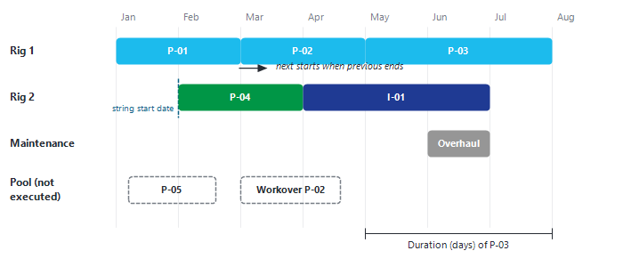

|
Sequence of events
1. Overview
A sequence of events (also called a "string") is an ordered list of opportunities carried out one after the other by the same resource: a drilling rig, a well-services crew, a maintenance team, a stimulation crew, a construction team, and so on.
Each string has a name (for example "Rig 1"), a "Performed By" resource and a start date. Precept places the first opportunity of the string on its start date; every following opportunity starts when the previous one ends (start date + duration of the opportunity). Moving an opportunity inside a string, or changing a duration, therefore shifts every opportunity that comes after it.
The dates calculated this way drive everything that is linked to the opportunities: new wells coming online, conversions, reroutings, changes of constraints, and shutdowns defined with relative dates (see Shutdowns and Constraints changes vs time). This is what makes what-if scheduling fast: change the order or a start date, and the whole forecast follows.
Opportunities that are not placed in any string stay in the "Pool" of opportunities. An opportunity in the Pool is not executed in the forecast.

Strings (rows) of opportunities executed one after the other, and the Pool of opportunities that are not scheduled.
2. Where to find it
Click "Sequence" in the "Expertise" group of the main ribbon. The menu offers four commands:
|
Command
|
What it does
|
|
"Add / Remove string. Modify string start date"
|
Opens the "Sequence" window, where strings are created, deleted, renamed, re-dated and permuted. See Add / Delete sequence of events.
|
|
"View sequence / Modify Opportunity duration"
|
Opens the "Sequences" window. Select a string in the drop-down to see its opportunities with their start date, end date and duration. You can change the "Duration" (days) or the "End_Date" of any opportunity; the change is written to the opportunity at once and the following dates are recalculated. "Start_Date" and "Item" are read-only (rename an opportunity in "Opportunities"; change the string start date in the "Sequence" window).
|
|
"Adjust Opportunity duration"
|
Lets you change the duration of an opportunity directly on the timeline of the main window.
|
|
"Import schedule from Excel"
|
Replaces the order of a string with a list pasted from Excel. See Build sequence from Excel.
|
To move opportunities between strings, or between the Pool and a string, work directly on the timeline of the main window. See Build sequence of events.
3. Typical workflow
1.Create the opportunities (see Opportunities). They go to the Pool.
2.Create the strings, with their "Performed By" resource and start date ("Sequence" > "Add / Remove string. Modify string start date").
3.Move the opportunities from the Pool into the strings, in the order you want (see Build sequence of events), or paste the order from Excel.
4.Check the durations ("Sequence" > "View sequence / Modify Opportunity duration").
5.Run the forecast. Use "Gain per opportunity" on the "Forecast" ribbon group to see the value of each opportunity.
4. In this section
•Add / Delete sequence of events: create, delete, rename and permute strings, and set their start date.
•Build sequence of events: move opportunities between the Pool and the strings on the timeline.
•Build sequence from Excel: paste the order of a string from Excel.
|